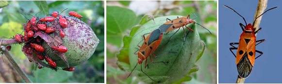

| Home |
| COTTON |
| 1. Leafhopper |
| 2. Cotton Aphid |
| 3. Thrips |
| 4. Whitefly |
| 5. Mealy Bug |
| 6. Red Cotton Bug |
| 7. Dusky Cotton Bug |
| 8. Tobacco Cutworm |
| 9. Leaf Roller |
| 10. Semiloopers |
| 11. Stem Weevil |
| 12. Shoot Weevil |
| 13. Surface Weevil |
| 14. Black Scale |
| 15. White Scale |
| 16. Yellow Stem Scale |
| Questions |
| Download Notes |
PESTS OF COTTON :: Minor Pests :: Red Cotton Bug
6. Red cotton bug: Dysdercus cingulatus (Pyrrhocoridae: Hemiptera)
Distribution and status: Uttar Pradesh, Bihar, Bombay, Andhra Pradesh and Tropical Africa, Tropical Asia, Australia, U.S.A. Central and South America and India. Regular pest at crop maturity.
Host Plants: Cotton, bhendi, maize, pearl millet, hollyhock, clover, sorghum and silk cotton.
Damage symptoms: The damage is caused by both nymphs and adults by sucking the sap of the plant as well as that of bolls and stain the lint. They are also, therefore, termed as cotton boll stainers. The bugs are gregarious in habit. Attacked seeds loose viability. The bacterium Nematospora gossypii enters the site of injury and stains the fibre.
Bionomics: The adult is a red and black bug with white stripes ventrally on the abdomen. The eggs are laid in loose masses in the soil. The fecundity of the bug is 100 – 130. Egg period 4-7 days. The nymph undergoes six instars to become adult. The nymphal period lasts for 26 - 89 days. The adult bug undergoes hibernation (resting period) during winter months.
 |
Management: Biocontrol agent Harpactor costalis ispredaceous on nymph and adult;
- Since the pest feeds gregariously, the infested leaves or bolls can be shaken in water and drowned.
- Plough the field to expose the eggs.
- Spray fluvalinate 25 EC 200-400 ml/ha orendosulfan 35 EC 750 ml/ha.